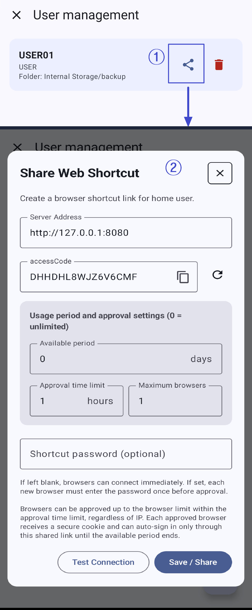

이미지에 표시된 번호와 아래 설명의 번호가 서로 대응합니다.
사용자 관리 목록에서 대상 사용자의 공유 아이콘을 누르면 웹 바로가기 공유 창이 열립니다. 바로가기는 선택한 사용자 계정에 연결됩니다.
- 링크를 받은 사용자는 계정 정보를 다시 입력하지 않고 브라우저에서 콘텐츠에 접근할 수 있습니다. 비밀번호를 설정했다면 승인할 때 입력해야 합니다.
- 설정한 최대 브라우저 수와 승인 제한 시간 안에서 새 브라우저를 승인할 수 있습니다.
- 관리자 화면 전체를 제공하지 않고 브라우저 접근을 공유할 때 사용할 수 있습니다.
서버 주소와 사용기간 및 승인 설정을 입력합니다. 기간과 브라우저 수에 0을 입력하면 제한없음으로 처리됩니다.
- 서버 주소: 공유받는 사람이 브라우저에서 열 서버 주소입니다. 다른 도메인을 사용한다면 해당 주소를 입력하세요.
- accessCode: 자동 생성되며 수정할 수 없습니다. 복사 아이콘으로 복사하거나 오른쪽 새로고침 아이콘으로 새 코드를 만들 수 있습니다. 저장/공유를 누르면 화면에 표시된 코드가 저장됩니다.
- 사용 가능 기간: 첫 브라우저 승인 시점부터 링크로 자동 연결할 수 있는 기간입니다. 0일은 제한없음입니다.
- 승인 제한 시간: 링크 생성 시점부터 새 브라우저를 승인할 수 있는 시간입니다. 0시간은 제한없음입니다.
- 최대 브라우저 수: 승인할 수 있는 브라우저 수입니다. 0은 제한없음입니다.
- 바로가기 비밀번호(선택): 입력하면 새 브라우저를 승인할 때마다 한 번 확인합니다.
승인 제한 시간 안에는 최대 브라우저 수에 도달할 때까지 새 브라우저를 승인할 수 있습니다. 승인된 브라우저는 전용 쿠키로 구분하며 IP는 비교하지 않습니다.
- 비밀번호를 비워두면 새 브라우저가 바로 승인될 수 있습니다.
- 비밀번호를 설정하면 새 브라우저마다 승인 전에 한 번 입력해야 합니다.
- 승인 제한 시간이 끝나도 이미 승인된 브라우저는 사용 가능 기간이 끝날 때까지 접속할 수 있습니다.
- 오른쪽 위 X: 바로가기를 저장하지 않고 창을 닫습니다.
- 연결 테스트: 입력한 서버 주소로 연결할 수 있는지 확인합니다.
- 저장/공유: 화면에 표시된 accessCode로 바로가기를 저장하고 시스템 공유 창을 엽니다.
사용 안내
일회성 초대나 임시 원격 접속에는 짧은 접근 기간과 바로가기 비밀번호를 고려하세요. 장기간 접근을 공유한다면 사용자 권한과 보안 설정을 함께 확인하세요.